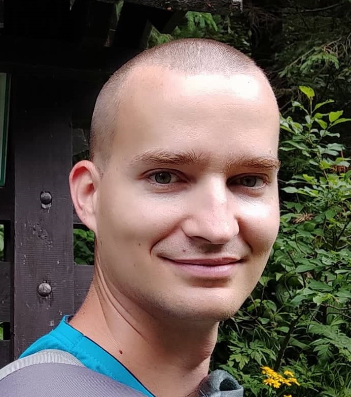

Slovak University of Technology in Bratislava
2015- 31/8/2019
PhD. of Applied mathematics

2015- 31/8/2019
PhD. of Applied mathematics
2008-2013
Master's degree of Applied Mathematics
15/2/2023 - 11/6/2025
1/8/2022 - 31.10.2022
1/11/2021 - 30.4.2022
1/6/2019 - 31/10/2021
20/10/2018 - 31/5/2019
problem analyzing, research, documentation studying, testing, debugging and implementing :
02/12/2013–16/07/2014
Critical, analytical, algorithmical and technical thinking. Ability to collaborate with developers and project manager. Passion for problem solving. Reliability, independence, responsibility. Listening skills. Williness to learn new technologies. Self-confident.
8 weeks
java, Spring framework, Jira, Postgre Sql
present: from end of 2023,
2021
2017-2019
2017-2019